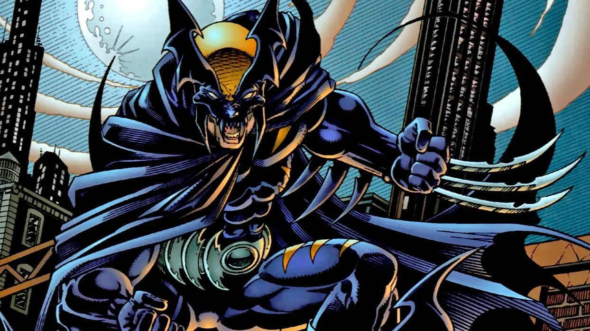
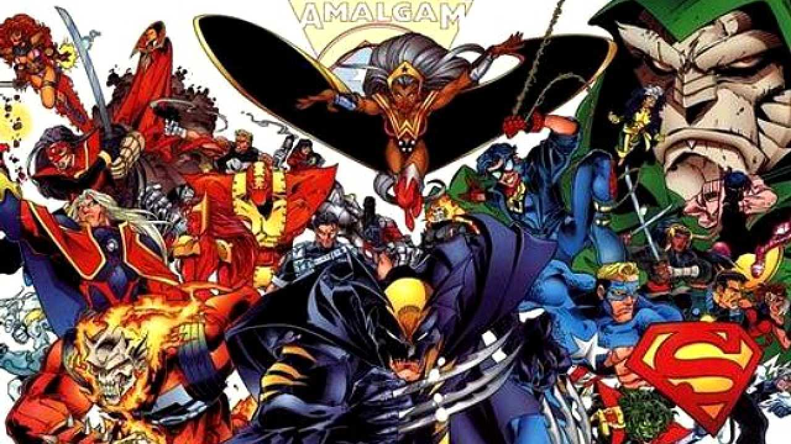

Marvel e DC vão republicar crossovers nas HQs
Editoras vão relançar encontros entre seus grandes heróis e o Universo Amálgama, que imaginou mistura de seus personagens
 NOME AUTOR
NOME AUTOR 30 fev 2024COMICS
30 fev 2024COMICS
A Marvel e a DC anunciaram que vão republicar os crossovers que seus universos fizeram nas HQs. As novas edições trarão tanto os encontros entre os grandes heróis das duas editoras, quanto o Universo Amálgama, composto por misturas de personagens queridos.
De acordo com as editoras, as republicações serão feitas em Omnibus, formato luxuoso em que são reunidas muitas edições de um mesmo título ou coleção. O primeiro se chama DC Versus Marvel e contará com os seguintes encontros:

- Batman/Capitão America
- Batman/Demolidor
- Batman/Justiceiro: Lago de Fogo
- Batman/Homem-Aranha
- Batman
- DC Special Series #27 (Batman versus O Incrível Hulk)
- Darkseid vs. Galactus: O Devorador
- Lanterna Verde/Surfista Prateado
- O Incrível Hulk versus Superman
- Os Fabulosos X-Men e os Novos Titãs
- Superman e Homem-Aranha
- Justiceiro/Batman: Cavaleiros Mortíferos
- Surfista Prateado/Superman
- Homem-Aranha e Batman
- Superman versus Homem-Aranha
- Superman/Quarteto Fantástico
A outra publicação será DC/Marvel: The Amalgam Age (DC/Marvel: A Era Amálgama), em tradução livre. Essa edição vai reunir os eventos DC Versus Marvel e todas as revistas do Universo Amálgama, povoado por heróis e vilões criados com base na mistura de heróis da Marvel e da DC, como é o caso de Garra das Trevas (Batman e Wolverine) ou Garoto-Aranha (Homem-Aranha e Superboy). A publicação contará com as seguintes revistas:

- Marvel Versus DC
- Marvel Versus DC - Série Dois
- Marvel Versus DC - Série Três
- Bat-Thing (Morcego Humano com Homem-Coisa)
- Bruce Wayne: Agente da S.H.I.E.L.D.
- Bullets and Bracelets (Mulher-Maravilha e Steve Trevor com Justiceira e Justiceiro)
- Challengers of the Fantastic (Desafiadores do Desconhecido com Quarteto Fantástico)
- Doutor Mistério (Doutor Estranho com Senhor Destino)
- Iron Lantern (Homem de Ferro com Lanterna Verde)
- Lendas do Garra das Trevas (Batman com Wolverine)
- Lobo, the Duck (Lobo com Howard, o Pato)
- Speed Demon (Flash com Motoqueiro Fantasma)
- Garoto-Aranha (Homem-Aranha com Superboy)
- Supersoldado (Superman com Captain America)
- Thorion, of the New Asgods (Thor e Asgard com Orion e Novos Deuses)
- X-Patrulha (X-Men e X-Force com Novos Titãs e Patrulha do Destino)
Vale notar que a HQ LJA/Vingadores não entrou em nenhuma das edições. O crossover entre as equipes teve um relançamento limitado em 2022 em homenagem ao lendário artista George Pérez. Não se sabe se o título será republicado isoladamente no futuro.
DC Versus Marvel e DC/Marvel: The Amalgam Age serão lançadas nos EUA em agosto. Ainda não se sabe se o relançamento acontecerá no Brasil, onde os quadrinhos de Marvel e DC são publicados pela Panini.